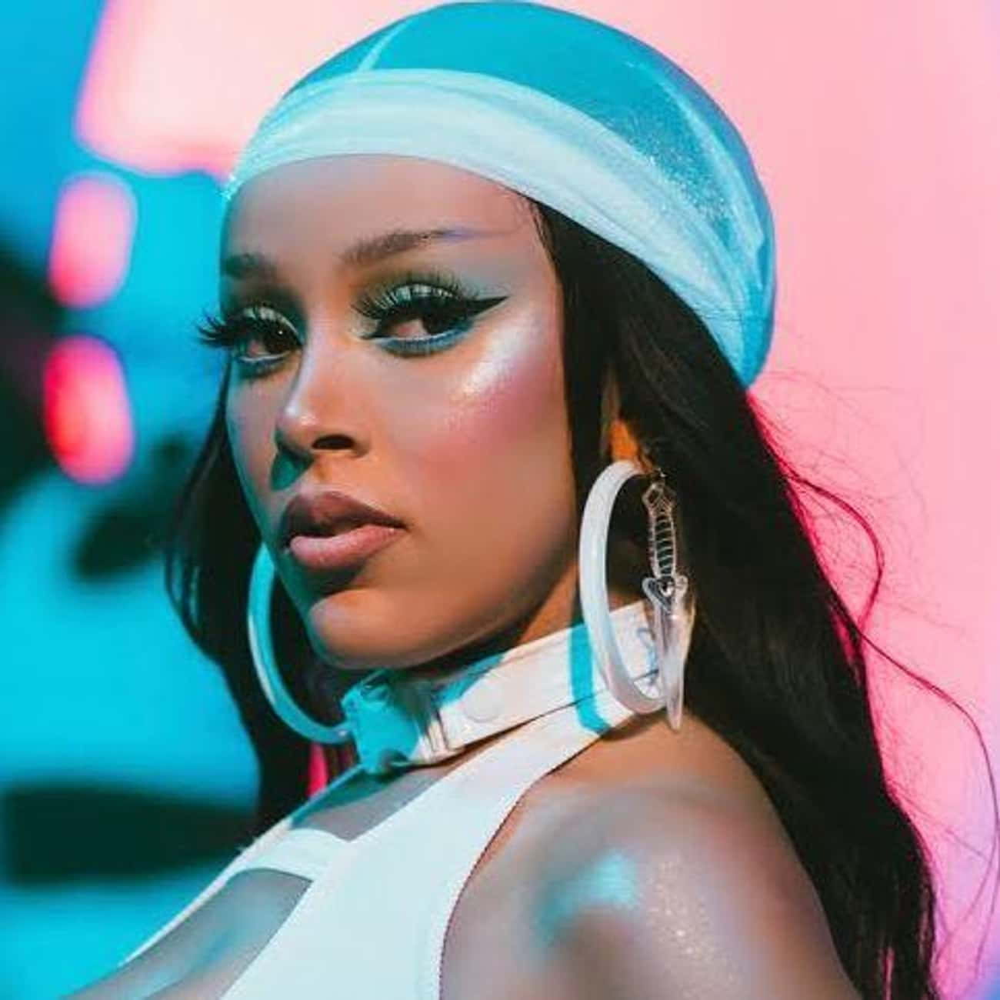
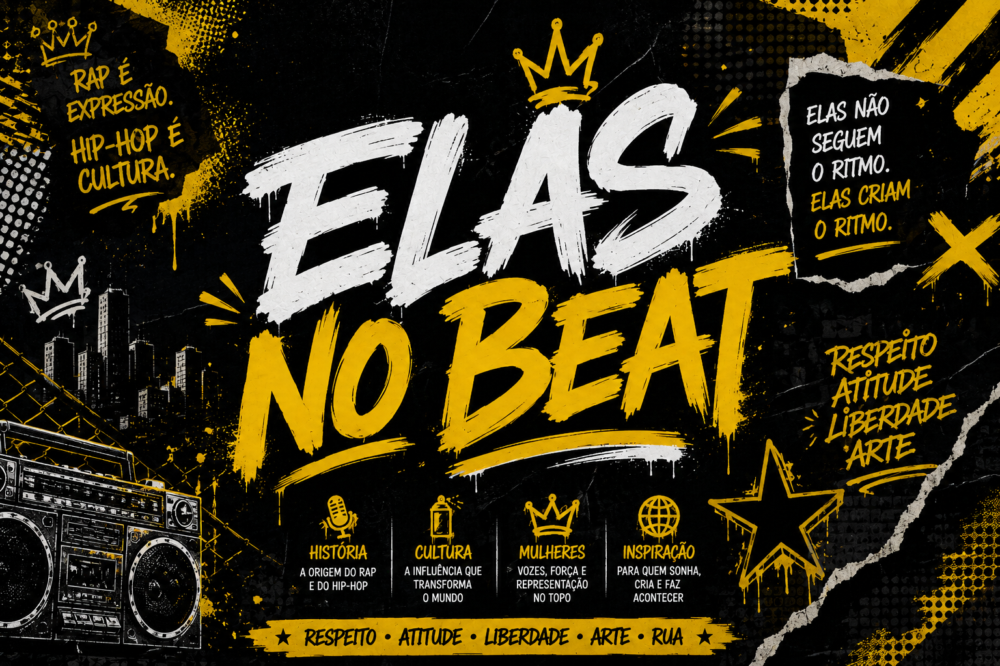
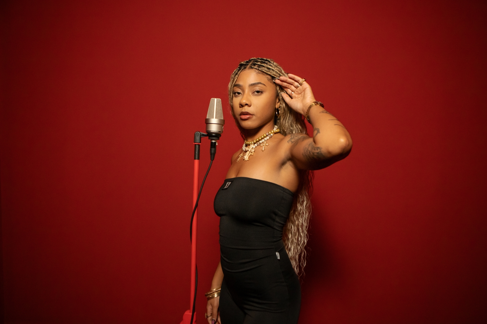
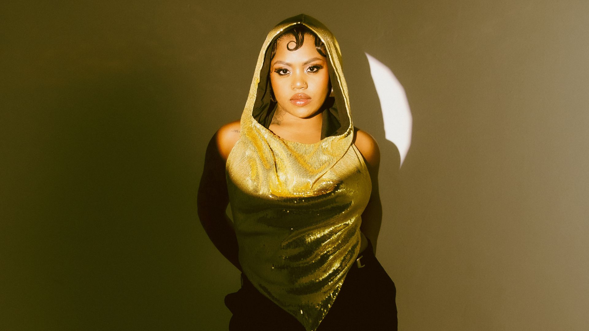

Doja Cat
Doja Cat é uma artista que mistura pop, rap e R&B com personalidade única e presença forte na cultura pop.
Elas não seguem o ritmo. Elas criam o ritmo.


Doja Cat é uma artista que mistura pop, rap e R&B com personalidade única e presença forte na cultura pop.

AJULIACOSTA é uma rapper brasileira conhecida por sua autenticidade, identidade forte e presença no rap nacional.

Duquesa é uma rapper brasileira que mistura rap, trap e R&B com uma identidade artística marcante.

Cardi B é uma das rappers mais famosas do mundo, conhecida por sua personalidade forte e estilo autêntico.
O Hip-Hop surgiu nos anos 1970, no Bronx, em Nova York, como uma forma de expressão das comunidades negras e latinas. O movimento reuniu música, dança, graffiti e arte, enquanto o rap se tornou uma ferramenta para contar histórias, expressar opiniões e denunciar desigualdades. No Brasil, o Hip-Hop ganhou força nos anos 1980, principalmente nas periferias de São Paulo. O rap passou a abordar temas como desigualdade, racismo, violência, identidade e resistência, tornando-se uma importante voz da cultura periférica.